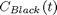
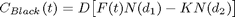
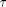

Black Price and Black Implied Volatility
The class returns the Black price and the Black implied volatility of swap options.
Contents
%MATLAB Code %%%%%%%%%%%%%%%%%%%%%%%%%%%%%%%%%%%%%%%%%%%%%%%%%%%%%%%%%%%%%%%%%%%%%%%%%%% classdef bsBlackPrice
%%%%%%%%%%%%%%%%%%%%%%%%%%%%%%%%%%%%%%%%%%%%%%%%%%%%%%%%%%%%%%%%%%%%%%%%%%%
How to Use the Class
There are three ways to use this class:
- To calculate the Black price of a European option, using [bsBlackPrice()].
- To calculate the implied volatility with the Black model using [BlackImpVol()].
- To calculate the first derivative of the Black price with respect to the volatility using [BlackLambda()].
Properties
%MATLAB Code %%%%%%%%%%%%%%%%%%%%%%%%%%%%%%%%%%%%%%%%%%%%%%%%%%%%%%%%%%%%%%%%%%%%%%%%%%% properties end %%%%%%%%%%%%%%%%%%%%%%%%%%%%%%%%%%%%%%%%%%%%%%%%%%%%%%%%%%%%%%%%%%%%%%%%%%%
List of Methods
The class introduces three methods:
1)[bsBlackPrice()] - Function returns the option price,  or , which expires at time, , using the Black pricing model.
2)[BlackImpVol()] - Function returns a Black implied volatility, , for a given market option price.
3)[BlackLambda()] - Function returns the first derivative of an option price, or , with respect to the volatility, .
%MATLAB Code %%%%%%%%%%%%%%%%%%%%%%%%%%%%%%%%%%%%%%%%%%%%%%%%%%%%%%%%%%%%%%%%%%%%%%%%%%% methods
% Constructor function obj = bsBlackPrice() end %%%%%%%%%%%%%%%%%%%%%%%%%%%%%%%%%%%%%%%%%%%%%%%%%%%%%%%%%%%%%%%%%%%%%%%%%%%
ans = Bootstrap.bsBlackPrice with no properties. Package: Bootstrap
Details of Methods
1) [bsBlackPrice()]
"""""""""""""""""""""""""""""""""""""""""""""""""""""""""""""""""""""""""
Description
Function returns the price of a European option, expiring at time, , using the Black pricing model. The type of option i.e "put" or "call" is specified by [OptionType].
Inputs
[Forward] - , delivery price in a forward contract that causes the contract to be worth zero at the current time, .
Data Type : double
[Strike] - , price at which the asset may be bought or sold in the option contract.
Data Type : double
[Maturity] - , time at which the option expires.
Data Type : double
[Volatility] - , volatility of the asset underlying the option.
Data Type : double
[DiscountFactor] - , where is the risk free interest rate and is the time to maturity.
Data Type : double
[OptionType] - Specifies the type of option i.e. "put or "call".
Data Type : string
Outputs
Black price of a put or call option.
Data type : double
Calculations
The Black price is calculated using the following for Call and Put options:
i) Call

ii) Put
Where,
: Call option price.
: Put option price.
: Forward Price at current time, .
: Maturity of the option.
 : Time until maturity, .
: Discount factor, with the risk free interest rate, and the time to maturity, .
: Strike Price.
: Volatility of the underlying asset.
: Cumulative probability distribution function for a standardised normal distribution.
%MATLAB CODE %%%%%%%%%%%%%%%%%%%%%%%%%%%%%%%%%%%%%%%%%%%%%%%%%%%%%%%%%%%%%%%%%%%%%%%%%%% % Other Methods function y=BlackPrice(obj, Forward , Strike , Maturity , ... Volatility , DiscountFactor, OptionType ) D1 = (log(Forward / Strike) + Volatility ^ 2 * Maturity / 2) /... (Volatility * Maturity ^ 0.5); D2 = D1 - Volatility * Maturity ^ 0.5; switch lower(OptionType) case 'put' ND1 = normcdf(-D1); ND2 = normcdf(-D2); PayOff = Strike * ND2 - Forward * ND1; case 'call' ND1 = normcdf(D1); ND2 = normcdf(D2); PayOff = Forward * ND1 - Strike * ND2; end y = DiscountFactor * PayOff; return end %%%%%%%%%%%%%%%%%%%%%%%%%%%%%%%%%%%%%%%%%%%%%%%%%%%%%%%%%%%%%%%%%%%%%%%%%%%
2) [BlackImpVol()]
"""""""""""""""""""""""""""""""""""""""""""""""""""""""""""""""""""""""""
Description
Function returns a Black implied volatility, , for a given market option price, using a root finding method.
Initially the Newton Raphson method is used. This method converges quadratically but cannot guarantee convergence.
If the Newton-Raphson method fails we use the more robust Bisection method which is slower but guaranteed to converge.
Inputs
[Forward] - , delivery price in a forward contract that causes the contract to be worth zero at the current time, .
Data Type : double
[Strike] - , price at which the asset may be bought or sold in the option contract.
Data Type : double
[Maturity] - , time at which the option expires.
Data Type : double
[DiscountFactor] - , where is the risk free interest rate and is the time to maturity.
Data Type : double
[OptionType] - Specifies the type of option i.e. "put or "call".
Data Type : string
[OptionPrice] - or , empirical, 'market' price of the call or put option, respectively.
Data Type : double
Outputs
Implied volatilty which gives the market option price when inserted into [bsBlackPrice()].
Data type : double
Calculations
i) In order for our root finding methods to converge, to approximate the implied volatility, , our starting value of should give Black prices within feasible ranges. For put and call options these ranges are:
&
If our initial values are not within the feasible ranges then an implied volatility of zero is returned.
ii) If we have inital values that are feasible, then we take the given empirical 'market' option price and calculate the implied volatility, , by approximating the root of:

or
using the Newton-Raphson method.
To do this we repeat the iterative equation:
Where,
: approximation to the implied volatility from the  th iteration of the equation above.
th iteration of the equation above.
: option price derived using the approximation to the implied volatility from the th iteration.
: empirical option price.
: first derivative of the option price derived using the approximation to the implied volatility from the th iteration. This is calculated using [BlackLambda()]
The Newton-Raphson converges quadratically but is not guaranteed to converge. If we do not achieve an implied volatility which reproduces the market value of the option to within a given tolerance we try the Bisection method which is slower but guarantees convergence.
iii) If the Newton-Raphson method did not converge we use the Bisection method.
Again we attempt to find the root of
or
We start with a range of s that we are confident contains the root of the expression above and bisect that range. Depending which side of the midpoint the root lies we halve our range using the midpoint as the new upper or lower bound.
We repeat this method until we know where the root lies to within a certain tolerance.
%MATLAB CODE %%%%%%%%%%%%%%%%%%%%%%%%%%%%%%%%%%%%%%%%%%%%%%%%%%%%%%%%%%%%%%%%%%%%%%%%%%% % Calculate Black's LogNormal parameter using a root finding excercise function y = BlackImpVol(obj, OptionPrice,Forward , Strike ,... Maturity , DiscountFactor, OptionType ) Impvol_min = 0; Impvol_max = 3; Impvol = 0.2; Toler = 0.00001 ; LambdaMin = 0.0001; MaxNumberOfNRIterations = 100; MaxNumberOfBSIterations = 100; % Check that price is within feasible range switch lower(OptionType) case 'put' Price_min = 0; Price_max = DiscountFactor * Strike; case 'call' Price_min = DiscountFactor * max(Forward - Strike, 0); % Intrinsic Value of a Call Option Price_max = DiscountFactor * Forward; end Val =obj.BlackPrice(Forward , Strike , Maturity , Impvol , ... DiscountFactor, OptionType ) ; % Estimate Implied Volatility if (OptionPrice >= Price_min && OptionPrice <= Price_max) && ... (OptionPrice > 0) Val =obj.BlackPrice(Forward , Strike , Maturity , Impvol , ... DiscountFactor, OptionType ) ; Lambda =obj.BlackLambda(Forward , Strike , Maturity , Impvol , ... DiscountFactor ); IterationCount = 0; while (abs(Val - OptionPrice) > Toler) && (IterationCount <= ... MaxNumberOfNRIterations) ... && (Impvol > 0) && (Impvol < Impvol_max) Lambda = max(LambdaMin, Lambda); Impvol = Impvol - (Val - OptionPrice) / Lambda; Val =obj.BlackPrice(Forward , Strike , Maturity , Impvol , ... DiscountFactor, OptionType ) ; Lambda =obj.BlackLambda(Forward , Strike , Maturity , Impvol , ... DiscountFactor ); IterationCount = IterationCount + 1; end if (abs(Val - OptionPrice) < Toler) y = Impvol; return end % Try Bisection Method IterationCount = 0; Impvol_a = Impvol_min; Impvol_b = Impvol_max; Impvol = (Impvol_a + Impvol_b) / 2; Val =obj.BlackPrice(Forward , Strike , Maturity , Impvol , ... DiscountFactor, OptionType ) ; while (abs(Val - OptionPrice) > Toler) && (IterationCount <= ... MaxNumberOfBSIterations) if (Val - OptionPrice) > 0 % Decrease the upper bound of our search interval Impvol_b = Impvol; else % Increase the Lower bound of our search interval Impvol_a = Impvol; end Impvol = (Impvol_a + Impvol_b) / 2; Val =obj.BlackPrice(Forward , Strike , Maturity , Impvol , ... DiscountFactor, OptionType ) ; IterationCount = IterationCount + 1; end end if (abs(Val - OptionPrice) < Toler) y = Impvol; return else y = 0; return end end %%%%%%%%%%%%%%%%%%%%%%%%%%%%%%%%%%%%%%%%%%%%%%%%%%%%%%%%%%%%%%%%%%%%%%%%%%%
3) [BlackLambda()]
"""""""""""""""""""""""""""""""""""""""""""""""""""""""""""""""""""""""""
Description
Function returns the first derivative of an option price, or , with respect to the volatility, .
Inputs
[Forward] - , delivery price in a forward contract that causes the contract to be worth zero at the current time, .
Data Type : double
[Strike] - , price at which the asset may be bought or sold in the option contract.
Data Type : double
[Maturity] - , time at which the option expires.
Data Type : double
[Volatility] - , volatility of the asset underlying the option.
Data Type : double
[DiscountFactor] - , where is the risk free interest rate and is the time to maturity.
Data Type : double
Outputs
Function returns the first derivative of the Black price with respect to volatility, .
Data type : double
Calculations
To calculate the first derivative of the Black price with respect to volatility we use the formula below,
where,
with,
: Call option price.
: Put option price.
: Forward Price at current time, .
: Time until maturity, .
: Discount factor, with the risk free interest rate, and the time to maturity, .
: Strike Price.
: Volatility of the underlying asset.
%MATLAB CODE %%%%%%%%%%%%%%%%%%%%%%%%%%%%%%%%%%%%%%%%%%%%%%%%%%%%%%%%%%%%%%%%%%%%%%%%%%% % Calculate the derivative of the black formula with respect to % volatility function y=BlackLambda(obj, Forward , Strike , Maturity , Volatility , ... DiscountFactor ) D1 = (log(Forward / Strike) + Volatility ^ 2 * Maturity / 2) / ... (Volatility * Maturity ^ 0.5); y = DiscountFactor * (Forward * sqrt(Maturity) * ... (1 / (sqrt(2 * pi))) * exp((-1 * D1 ^ 2) / 2)); end
end
end